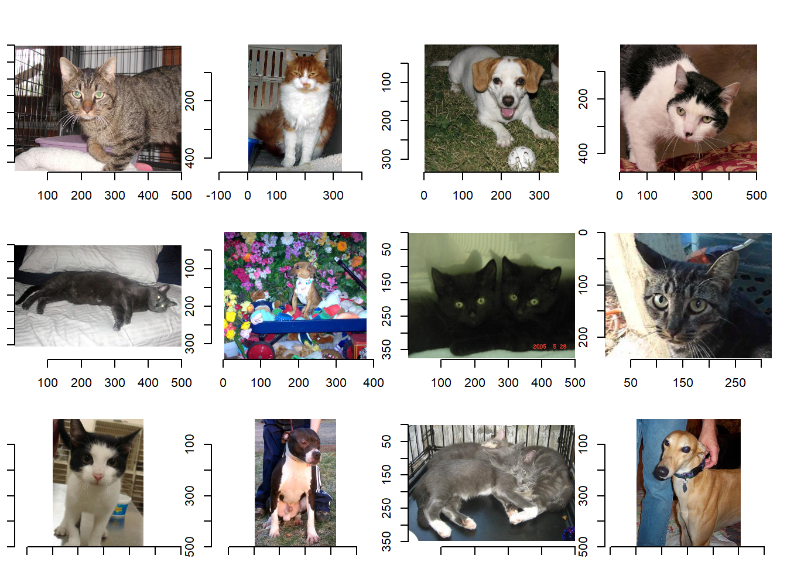
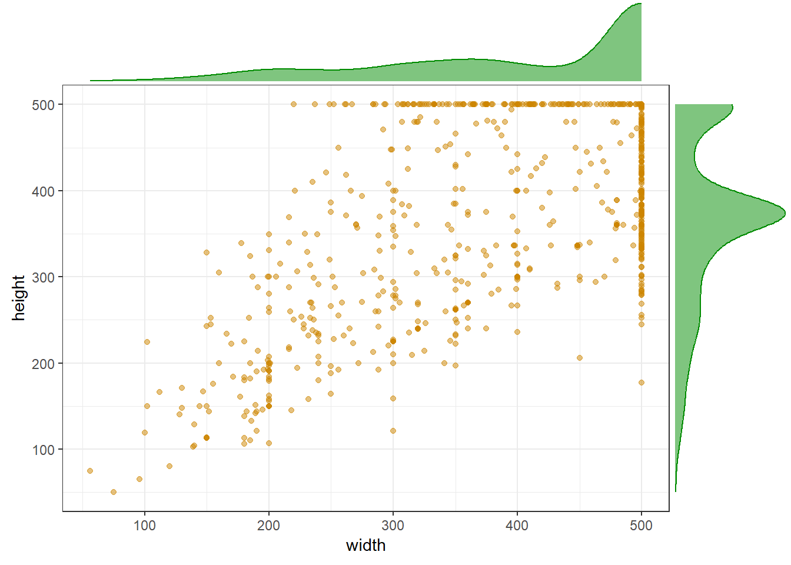
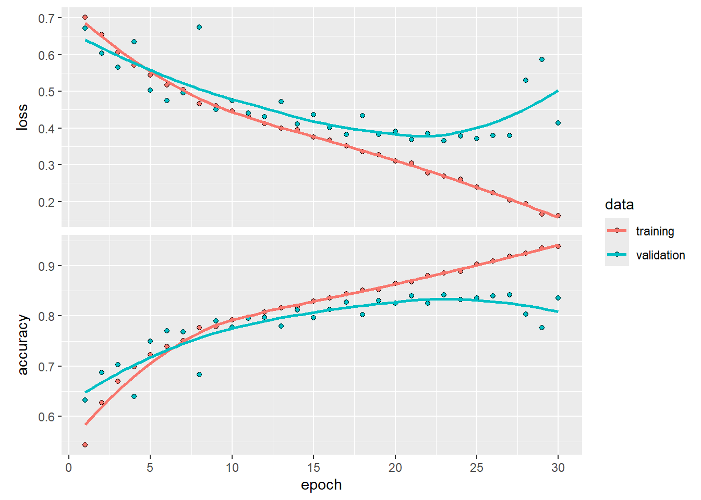
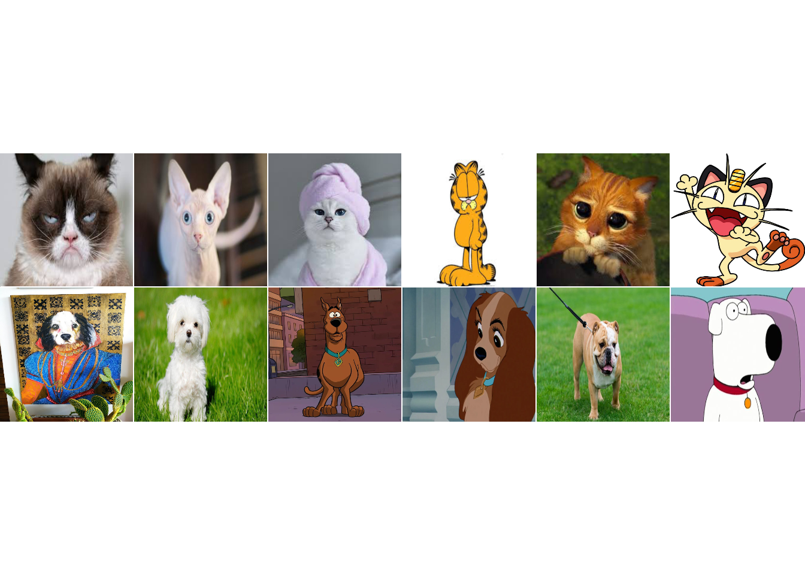

library(tensorflow)
library(keras)
library(tfdatasets)
library(tidyverse) # Para manejo de datos
library(imager) # Manipulación de imágenes
library(caret) #Evaluación de modelo
set.seed(1234)Deep Learning
CNN: Ejemplo de Gatos y Perros en R
1 Introducción
Esta vez exploraremos un ejemplo práctico empleando la biblioteca keras en R, pero esta vez haremos la clasificación de imágenes desde cero, comenzando desde archivos locales de imagenes JPEG en el disco. En esta ocasión, usaremos los datos de clasificación binaria Cats vs Dogs de Kaggle.
Este ejemplo está basado en el tutorial de Tensorflow para R.
2 Librerías y datos
2.1 Librerías
2.2 Datos
2.2.1 Descarga de datos en bruto
Primero, descargaremos el archivo ZIP de 786M que contiene los datos en bruto. Notar el manejo y creación de carpetas, utilizando el directorio relativo de R ("./).
url <- "https://download.microsoft.com/download/3/E/1/3E1C3F21-ECDB-4869-8368-6DEBA77B919F/kagglecatsanddogs_5340.zip"
options(timeout = 60 * 5) # 5 minutes
download.file(url, destfile = "./db/cats_and_dogs/kagglecatsanddogs_5340.zip") # (786.7 MB)
## Para ver un listado de todo lo que contiene el archivo zip:
# zip::zip_list("./db/cats_and_dogs/kagglecatsanddogs_5340.zip") |> tibble::as_tibble()
zip::unzip("./db/cats_and_dogs/kagglecatsanddogs_5340.zip", exdir = "./db/cats_and_dogs/")Ahora tenemos una carpeta llamada PetImages que contiene dos subcarpetas, Cat y Dog. Cada subcarpeta contiene archivos de imágenes para cada categoría.
path = "./db/cats_and_dogs/PetImages"
fs::dir_info(path)# A tibble: 2 × 18
path type size permissions modification_time user group device_id
<fs::path> <fct> <fs:> <fs::perms> <dttm> <chr> <chr> <dbl>
1 …tImages/Cat dire… 0 rw- 2024-05-22 10:58:07 <NA> <NA> 2.12e9
2 …tImages/Dog dire… 0 rw- 2024-05-22 10:57:59 <NA> <NA> 2.12e9
# ℹ 10 more variables: hard_links <dbl>, special_device_id <dbl>, inode <dbl>,
# block_size <dbl>, blocks <dbl>, flags <int>, generation <dbl>,
# access_time <dttm>, change_time <dttm>, birth_time <dttm>3 Pre procesamiento
3.1 Leer imágenes
Leer datos de imágenes involucra adentrarse en el proceso de cargar e interpretar información visual de archivos de imagen en un formato que se pueda utilizar para análisis, manipulación o aprendizaje automático.
3.1.1 Leer el directorio de carpetas
folder_list <- list.files(path)
folder_list[1] "Cat" "Dog"folder_path <- paste0(path, "/", folder_list, "/")
folder_path[1] "./db/cats_and_dogs/PetImages/Cat/" "./db/cats_and_dogs/PetImages/Dog/"La salida mostrada presenta los nombres de subdirectorios o archivos presentes en el directorio "./db/cats_and_dogs/PetImages". Cada entrada en la lista corresponde a una categoría específica, como Cat y Dog. Esta salida proporciona efectivamente una visión general del contenido dentro del directorio y sirve como un punto de partida valioso para tareas de procesamiento o análisis de datos adicionales. Al mostrar la salida en una nueva ventana, el fragmento de código asegura que los resultados sean fácilmente visibles e interpretables.
3.1.2 Leer nombres de archivos
Leer los nombres de los archivos implica extraer e interpretar los nombres de los archivos dentro de un directorio específico. Este proceso es un paso fundamental para entender la composición y estructura de un conjunto de datos no estructurados, como lo son las imágenes de este ejemplo.
# Obtener nombres de archivos
file_name <- map(folder_path,
function(x) paste0(x, list.files(x))
) %>%
unlist()
# Primeros 6 nombres de archivos
head(file_name)[1] "./db/cats_and_dogs/PetImages/Cat/0.jpg"
[2] "./db/cats_and_dogs/PetImages/Cat/1.jpg"
[3] "./db/cats_and_dogs/PetImages/Cat/10.jpg"
[4] "./db/cats_and_dogs/PetImages/Cat/100.jpg"
[5] "./db/cats_and_dogs/PetImages/Cat/1000.jpg"
[6] "./db/cats_and_dogs/PetImages/Cat/10000.jpg"# Últimos 6 nombres de archivos
tail(file_name)[1] "./db/cats_and_dogs/PetImages/Dog/9994.jpg"
[2] "./db/cats_and_dogs/PetImages/Dog/9995.jpg"
[3] "./db/cats_and_dogs/PetImages/Dog/9996.jpg"
[4] "./db/cats_and_dogs/PetImages/Dog/9997.jpg"
[5] "./db/cats_and_dogs/PetImages/Dog/9998.jpg"
[6] "./db/cats_and_dogs/PetImages/Dog/9999.jpg"# Cantidad de archivos
length(file_name)[1] 23198El conjunto de datos de imágenes consta de 23198 archivos que se han extraído y almacenado con éxito desde la carpeta designada. Esta información proporciona una visión integral del volumen de datos accesibles, representando la diversidad y complejidad inherente al conjunto de datos. Al conocer la presencia de 23198 archivos de imágenes, podemos obtener una comprensión más profunda de los recursos disponibles para análisis, aprendizaje automático o desarrollo de modelos. Además, comprender el tamaño del conjunto de datos también ayuda a planificar estrategias de limpieza de datos, transformaciones y la selección de características apropiadas. Al utilizar esta información, podemos asegurar que los pasos subsiguientes en la exploración y utilización del conjunto de datos se lleven a cabo de manera eficiente y efectiva. Veamos 6 ejemplos de muestra que se seleccionarán para un análisis más detallado.
# Seleccionar imágenes aleatorias
set.seed(99)
sample_image <- sample(file_name, 12)
# Cargar las imágenes en R
img <- map(sample_image, load.image)
# Gráfico de las imágenes
par(mfrow = c(3, 4)) # Crea una grilla de 3 x 4
par(mar=c(1, 1, 3, 1))
map(img, plot)
[[1]]
Image. Width: 500 pix Height: 375 pix Depth: 1 Colour channels: 3
[[2]]
Image. Width: 329 pix Height: 450 pix Depth: 1 Colour channels: 3
[[3]]
Image. Width: 350 pix Height: 334 pix Depth: 1 Colour channels: 3
[[4]]
Image. Width: 500 pix Height: 468 pix Depth: 1 Colour channels: 3
[[5]]
Image. Width: 500 pix Height: 303 pix Depth: 1 Colour channels: 3
[[6]]
Image. Width: 380 pix Height: 342 pix Depth: 1 Colour channels: 3
[[7]]
Image. Width: 500 pix Height: 375 pix Depth: 1 Colour channels: 3
[[8]]
Image. Width: 320 pix Height: 240 pix Depth: 1 Colour channels: 3
[[9]]
Image. Width: 355 pix Height: 500 pix Depth: 1 Colour channels: 3
[[10]]
Image. Width: 318 pix Height: 500 pix Depth: 1 Colour channels: 3
[[11]]
Image. Width: 500 pix Height: 347 pix Depth: 1 Colour channels: 3
[[12]]
Image. Width: 407 pix Height: 500 pix Depth: 1 Colour channels: 3 3.1.3 Dimensión de las imágenes
# Descripción completa de la imagen
img <- load.image(file_name[2])
imgImage. Width: 300 pix Height: 281 pix Depth: 1 Colour channels: 3 # Dimensión de la imagen
dim(img)[1] 300 281 1 3La imagen cargada es una imagen con 3 canales de color, y dimensiones 300x281 pixeles. Cada pixel está representado por 3 valores (3 canales de imagen). En el caso de imágenes en escala de grises, se tiene tan solo un canal de color.
# Función para guardar altura, anchura y nombre de archivo de una imagen
get_dim <- function(x){
img <- load.image(x)
df_img <- data.frame(height = height(img),
width = width(img),
filename = x
)
return(df_img)
}
get_dim(file_name[1]) height width filename
1 375 500 ./db/cats_and_dogs/PetImages/Cat/0.jpgLa función get_dim() carga una imagen utilizando la función load.image() y luego crea un data frame df_img que contiene tres columnas: altura, ancho y nombre del archivo. Las dimensiones de las imágenes cargadas pueden ser luego guardadas en las columnas altura y ancho ( height y width), y el correspondiente nombre del archivo (con su respectiva ruta) es guardado en la columna filename.
3.2 Filtrar imágenes corruptas
Cuando se trabaja con una gran cantidad de datos de imágenes del mundo real, es común encontrar imágenes corruptas que no pueden ser leídas. Filtraremos las imágenes mal codificadas que no tienen el string JFIF en su header.
n_deleted <- 0L
for(filepath in list.files(path, pattern = "\\.jpg$",
recursive = TRUE, full.names = TRUE)) {
header <- readBin(filepath, what = "raw", n = 10)
if(!identical(header[7:10], charToRaw("JFIF"))) {
n_deleted <- n_deleted + 1L
unlink(filepath)
}
}
cat(sprintf("%d imagenes eliminadas\n", n_deleted))3.3 Distribución de las dimensiones de las imágenes
Analizamos los tamaños de las imágenes para determinar el rango de tamaños que contiene el set de datos.
# Seleccionar aleatoriamente 1000 imágenes de muestra
set.seed(123)
sample_file <- sample(file_name, 1000)
# Ejecutamos la función get_dim() para cada imagen
file_dim <- map_df(sample_file, get_dim)
head(file_dim, 10) height width filename
1 500 307 ./db/cats_and_dogs/PetImages/Dog/576.jpg
2 113 150 ./db/cats_and_dogs/PetImages/Dog/5808.jpg
3 500 375 ./db/cats_and_dogs/PetImages/Cat/1616.jpg
4 308 285 ./db/cats_and_dogs/PetImages/Cat/11762.jpg
5 500 375 ./db/cats_and_dogs/PetImages/Cat/1992.jpg
6 500 429 ./db/cats_and_dogs/PetImages/Dog/10007.jpg
7 421 500 ./db/cats_and_dogs/PetImages/Cat/3347.jpg
8 498 500 ./db/cats_and_dogs/PetImages/Cat/5266.jpg
9 331 200 ./db/cats_and_dogs/PetImages/Dog/3097.jpg
10 430 350 ./db/cats_and_dogs/PetImages/Cat/1394.jpgsummary(file_dim) height width filename
Min. : 50.0 Min. : 56.0 Length:1000
1st Qu.:311.8 1st Qu.:325.8 Class :character
Median :375.0 Median :472.5 Mode :character
Mean :363.6 Mean :407.1
3rd Qu.:426.0 3rd Qu.:500.0
Max. :500.0 Max. :500.0 library(ggplot2)
library(ggExtra)
p = file_dim %>%
ggplot(aes(x=width, y=height)) +
geom_point(color="orange3", fill="orange1", alpha=0.5) +
theme_bw()
ggMarginal(p, type="density", color="green4", fill="green4", alpha=0.5)
3.4 Uso de Data Augmentation
Cuando no se cuenta con un conjunto de datos de imágenes suficientemente grande, es una buena práctica introducir diversidad en las muestras de manera artificial aplicando transformaciones aleatorias, pero realistas, a las imágenes de entrenamiento. Ejemplos son giros horizontales o pequeñas rotaciones aleatorias. Esto ayuda a exponer el modelo a diferentes aspectos de los datos de entrenamiento mientras disminuye el sobreajuste (overfitting).
La variable target_size se define como un vector [150, 150], indicando las dimensiones deseadas para redimensionar las imágenes. Este paso de preprocesamiento asegura que todas las imágenes se redimensionen uniformemente a una altura y anchura de 150 píxeles, facilitando dimensiones de entrada consistentes para el modelo.
Además, la variable batch_size se establece en 250. Durante el entrenamiento del modelo, el conjunto de datos se divide en lotes, y cada lote contiene 75 muestras. Esta configuración ayuda a optimizar el uso de la memoria y la eficiencia computacional durante el proceso de entrenamiento.
# Altura y ancho deseado para las imágenes
target_size <- c(150, 150)
# Tamaño de "batch" para el entrenamiento del modelo
batch_size <- 250set.seed(2024)
# Generador de imágenes
train_data_gen =
image_data_generator(rescale = 1/255,
zoom_range = 0.25, # Rango de Zoom_in / zoom_out
validation_split = 0.2, # 20% data para as validación
fill_mode = "nearest"
# acá se incorporan más tecnicas de data augmentation
)La siguiente configuración está establecida para el generador de datos de imagen train_data_gen:
rescale: Los valores de los píxeles se escalan al rango [0, 1] dividiéndolos por 255, lo que estandariza los datos de entrada.zoom_range: Las imágenes pueden ampliarse o reducirse hasta en un 25%, diversificando aún más el conjunto de datos.validation_split: Se reserva una porción de los datos (20%) como datos de validación para monitorear el rendimiento del modelo durante el entrenamiento.fill_mode = "nearest": Esto especifica cómo se rellenan los valores de los píxeles al aplicar transformaciones como rotación o zoom."nearest"rellena los valores faltantes con el píxel más cercano.
Estas técnicas de data augmentation, combinadas con el reescalado y la división de validación, contribuyen a crear un conjunto de datos más robusto y diverso para el entrenamiento. El generador train_data_gen prepara los datos con estas transformaciones, ayudando al modelo a aprender a reconocer patrones y características bajo diversas condiciones y orientaciones.
La variable target_size se define como un vector [150, 150], indicando las dimensiones deseadas para redimensionar las imágenes. Este paso de preprocesamiento asegura que todas las imágenes se redimensionen uniformemente a una altura y anchura de 150 píxeles, facilitando dimensiones de entrada consistentes para el modelo.
Además, la variable batch_size se establece en 250. Durante el entrenamiento del modelo, el conjunto de datos se divide en lotes, y cada lote contiene 75 muestras. Esta configuración ayuda a optimizar el uso de la memoria y la eficiencia computacional durante el proceso de entrenamiento.
set.seed(100)
# Dataset entrenamiento
train_image_array_gen =
flow_images_from_directory(directory = path, # Carpeta de los datos
target_size = target_size, # (150 x 150)
color_mode = "rgb", # también puede ser "grayscale"
batch_size = batch_size ,
seed = 100, # semilla aleatoria
subset = "training", # para datos de entrenamiento
generator = train_data_gen,
class_mode = 'binary'
)Found 18559 images belonging to 2 classes.# Dataset validación
val_image_array_gen =
flow_images_from_directory(directory = path,
target_size = target_size,
color_mode = "rgb",
batch_size = batch_size ,
seed = 100,
subset = "validation", # para datos de validación
generator = train_data_gen,
class_mode = 'binary'
)Found 4639 images belonging to 2 classes.El conjunto de datos se divide en dos subconjuntos: el Conjunto de Datos de Entrenamiento (train_image_array_gen) y el Conjunto de Datos de Validación (val_image_array_gen). Cada subconjunto se prepara utilizando la función flow_images_from_directory.
Para el conjunto de datos de entrenamiento:
- El parámetro
directoryespecifica la carpeta que contiene los datos. target_sizedefine las dimensiones deseadas de la imagen (150 x 150 píxeles).color_modeindica el uso de rgb (3 canales).batch_sizeestablece el tamaño del lote para el entrenamiento (250).seedestablece la semilla aleatoria para la reproducibilidad.subsetse establece en"training"para designar este subconjunto como datos de entrenamiento.generatorespecifica el generadortrain_data_genpara el preprocesamiento y data augmentation (de ser necesario).
3.5 Balanceo de Datos
Mantener proporciones equilibradas de datos en los subconjuntos ayuda a garantizar que el modelo esté expuesto a una variedad representativa de ejemplos durante el entrenamiento, permitiéndole aprender eficazmente entre diferentes clases o categorías. Una proporción adecuada de datos en el conjunto de validación es igualmente importante, ya que asegura una evaluación justa del rendimiento del modelo en datos no vistos.
set.seed(100)
# Número de muestras de entrenamiento
train_samples <- train_image_array_gen$n
# Número de muestras de validación
valid_samples <- val_image_array_gen$n
# Número de clases/categorías objetivo
output_n <- n_distinct(train_image_array_gen$classes)
# Obtener la proporción de clases
table("\nFrecuencia" = factor(train_image_array_gen$classes)
) %>%
prop.table()
Frecuencia
0 1
0.5011585 0.4988415 4 CNNs
4.1 La base del modelo
Reutilizaremos la misma estructura general: la CNN será una superposición de capas alternadas de layer_conv_2d (con activación relu) y etapas de layer_max_pooling_2d. A medida que se “profundiza”, se aumenta el número de filtros. Esto se debe a que las convoluciones pueden aprender jerarquías espaciales de patrones. Una primera capa de convolución aprenderá pequeños patrones locales como bordes, una segunda capa de convolución aprenderá patrones más grandes formados por las características de las primeras capas, y así sucesivamente. Esto permite que las redes convolucionales aprendan de manera eficiente conceptos visuales cada vez más complejos y abstractos.
modelo <- keras_model_sequential() %>%
# Añadiendo la primera capa de convolución con 16 filtros de 3x3
# Añadimos una dimensión adicional en la forma de entrada ya que las convoluciones operan sobre tensores 3D
# La forma de entrada le dice a la red que la primera capa debe esperar
# imágenes de 150 por 150 píxeles con una profundidad de color de 3, es decir, imágenes RGB
layer_conv_2d(input_shape = c(target_size, 3), filters = 16, kernel_size = c(3, 3), activation = 'relu') %>%
# Añadiendo una capa de max pooling que reduce a la mitad las dimensiones
layer_max_pooling_2d(pool_size = c(2, 2)) %>%
# Añadiendo una segunda capa de convolución con 32 filtros
layer_conv_2d(filters = 32, kernel_size = c(3, 3), activation = 'relu') %>%
# Añadiendo una capa de pooling
layer_max_pooling_2d(pool_size = c(2, 2)) %>%
# Aumentando el número de filtros a medida que disminuye el tamaño de la imagen
layer_conv_2d(filters = 64, kernel_size = c(3, 3), activation = 'relu') %>%
layer_max_pooling_2d(pool_size = c(2, 2))4.2 Añadiendo un clasificador a la CNN
Las capas convolucionales aprenden las características y las pasan a las capas densas (feed forward, o MLP), que asignan las características aprendidas a las etiquetas dadas. Por lo tanto, el siguiente paso es alimentar el último tensor de salida a una red de clasificador densamente conectada como las que ya conocemos: un grupo de capas densas. Estos clasificadores procesan vectores, que son 1D, sin embargo, la salida actual es un tensor 3D. Primero, se debe aplanar las salidas 3D a 1D, y luego agregar algunas capas densas en la parte superior.
Cabe destacar que, dado que nos enfrentamos a un problema de clasificación de dos clases, es decir, un problema de clasificación binaria, terminaremos nuestra red con una activación sigmoide, de modo que la salida de nuestra red será un solo escalar entre 0 y 1, codificando la probabilidad de que la imagen actual pertenezca a la clase 1 (en lugar de la clase 0).
modelo = modelo %>%
layer_flatten() %>%
layer_dense(units = 512, activation = 'relu') %>%
layer_dense(units = 1, activation ='sigmoid')
modelo %>% summary()Model: "sequential"
________________________________________________________________________________
Layer (type) Output Shape Param #
================================================================================
conv2d_2 (Conv2D) (None, 148, 148, 16) 448
max_pooling2d_2 (MaxPooling2D) (None, 74, 74, 16) 0
conv2d_1 (Conv2D) (None, 72, 72, 32) 4640
max_pooling2d_1 (MaxPooling2D) (None, 36, 36, 32) 0
conv2d (Conv2D) (None, 34, 34, 64) 18496
max_pooling2d (MaxPooling2D) (None, 17, 17, 64) 0
flatten (Flatten) (None, 18496) 0
dense_1 (Dense) (None, 512) 9470464
dense (Dense) (None, 1) 513
================================================================================
Total params: 9494561 (36.22 MB)
Trainable params: 9494561 (36.22 MB)
Non-trainable params: 0 (0.00 Byte)
________________________________________________________________________________Configuramos el modelo Keras para el entrenamiento (compile):
modelo %>%
compile(
loss = 'binary_crossentropy',
optimizer = optimizer_rmsprop(learning_rate = 0.001),
metrics = 'accuracy'
)La función de pérdida binary_crossentropy calcula la pérdida de entropía cruzada entre las etiquetas verdaderas y las etiquetas predichas. Se utiliza típicamente cuando solo hay dos clases de etiquetas.
5 Entrenamiento de la CNN
Como hemos visto, este es el proceso donde se “aprende” la relación entre los arreglos train_images y train_labels.
Ajustaremos el modelo a los datos utilizando la función fit para generadores de datos como este. El primer argumento de un generador, que producirá lotes de entradas y objetivos indefinidamente, será cuántas muestras debe tomar del generador antes de declarar el final de una época. Este es el papel del argumento steps_per_epoch. Define el número total de pasos (lotes de muestras) que se deben producir del generador antes de declarar terminada una época y comenzar la siguiente. Generalmente, debería ser igual al número de muestras en tu conjunto de datos dividido por el tamaño del lote.
validation_steps describe el número total de pasos (lotes de muestras) que se deben producir del generador antes de detenerse al final de cada época. Le indica a la red cuántos lotes debe tomar del generador de validación para la evaluación.
Una época termina cuando el modelo ha visto steps_per_epoch lotes.
5.1 Ajuste del modelo utilizando un generador de lotes (batch generator)
Entrenamos por 15 épocas, esto puede tardar unos cuantos minutos en ejecutarse. Además establecemos callbacks. Para revisar en detalle, ver la función callback_model_checkpoint.
epochs = 30
# Callbacks, para guardar los modelos por época
#callbacks <- list(callback_model_checkpoint(paste0(path,"/save_at_{epoch}.keras")))
dir_path_train = "./db/cats_and_dogs/"
# Callbacks, para ir guardando el mejor modelo
callbacks =
callback_model_checkpoint(
filepath = dir_path_train,
monitor = "val_loss",
verbose = 0,
save_best_only = TRUE,
save_weights_only = FALSE,
mode = c("auto", "min", "max"),
period = NULL,
save_freq = "epoch"
)
tiempo_ini = Sys.time() #Para medir el tiempo de entrenamiento
history <- modelo %>% fit(
train_image_array_gen, # Datos entrenamiento
# Número total de pasos (lotes de muestras) que se deben producir
# antes de declarar terminada una época y comenzar la siguiente.
steps_per_epoch = as.integer(train_samples / batch_size),
# Una época es una iteración sobre todos los datos proporcionados
epochs = epochs,
callbacks = callbacks,
validation_data = val_image_array_gen,
validation_steps = as.integer(valid_samples / batch_size)
)Epoch 1/30
74/74 - 93s - loss: 0.7010 - accuracy: 0.5432 - val_loss: 0.6712 - val_accuracy: 0.6324 - 93s/epoch - 1s/step
Epoch 2/30
74/74 - 98s - loss: 0.6552 - accuracy: 0.6273 - val_loss: 0.6033 - val_accuracy: 0.6871 - 98s/epoch - 1s/step
Epoch 3/30
74/74 - 99s - loss: 0.6061 - accuracy: 0.6699 - val_loss: 0.5655 - val_accuracy: 0.7027 - 99s/epoch - 1s/step
Epoch 4/30
74/74 - 97s - loss: 0.5711 - accuracy: 0.6991 - val_loss: 0.6354 - val_accuracy: 0.6396 - 97s/epoch - 1s/step
Epoch 5/30
74/74 - 101s - loss: 0.5442 - accuracy: 0.7231 - val_loss: 0.5033 - val_accuracy: 0.7491 - 101s/epoch - 1s/step
Epoch 6/30
74/74 - 100s - loss: 0.5165 - accuracy: 0.7388 - val_loss: 0.4749 - val_accuracy: 0.7700 - 100s/epoch - 1s/step
Epoch 7/30
74/74 - 101s - loss: 0.5047 - accuracy: 0.7502 - val_loss: 0.4958 - val_accuracy: 0.7680 - 101s/epoch - 1s/step
Epoch 8/30
74/74 - 101s - loss: 0.4661 - accuracy: 0.7769 - val_loss: 0.6740 - val_accuracy: 0.6829 - 101s/epoch - 1s/step
Epoch 9/30
74/74 - 99s - loss: 0.4605 - accuracy: 0.7785 - val_loss: 0.4507 - val_accuracy: 0.7898 - 99s/epoch - 1s/step
Epoch 10/30
74/74 - 100s - loss: 0.4457 - accuracy: 0.7916 - val_loss: 0.4742 - val_accuracy: 0.7771 - 100s/epoch - 1s/step
Epoch 11/30
74/74 - 97s - loss: 0.4314 - accuracy: 0.7975 - val_loss: 0.4407 - val_accuracy: 0.7953 - 97s/epoch - 1s/step
Epoch 12/30
74/74 - 96s - loss: 0.4125 - accuracy: 0.8077 - val_loss: 0.4299 - val_accuracy: 0.7969 - 96s/epoch - 1s/step
Epoch 13/30
74/74 - 98s - loss: 0.3990 - accuracy: 0.8156 - val_loss: 0.4722 - val_accuracy: 0.7793 - 98s/epoch - 1s/step
Epoch 14/30
74/74 - 97s - loss: 0.3954 - accuracy: 0.8178 - val_loss: 0.4100 - val_accuracy: 0.8118 - 97s/epoch - 1s/step
Epoch 15/30
74/74 - 100s - loss: 0.3758 - accuracy: 0.8289 - val_loss: 0.4363 - val_accuracy: 0.7960 - 100s/epoch - 1s/step
Epoch 16/30
74/74 - 102s - loss: 0.3661 - accuracy: 0.8357 - val_loss: 0.4013 - val_accuracy: 0.8127 - 102s/epoch - 1s/step
Epoch 17/30
74/74 - 96s - loss: 0.3512 - accuracy: 0.8435 - val_loss: 0.3829 - val_accuracy: 0.8269 - 96s/epoch - 1s/step
Epoch 18/30
74/74 - 97s - loss: 0.3356 - accuracy: 0.8514 - val_loss: 0.4329 - val_accuracy: 0.8022 - 97s/epoch - 1s/step
Epoch 19/30
74/74 - 98s - loss: 0.3274 - accuracy: 0.8522 - val_loss: 0.3830 - val_accuracy: 0.8309 - 98s/epoch - 1s/step
Epoch 20/30
74/74 - 100s - loss: 0.3097 - accuracy: 0.8642 - val_loss: 0.3907 - val_accuracy: 0.8251 - 100s/epoch - 1s/step
Epoch 21/30
74/74 - 97s - loss: 0.3050 - accuracy: 0.8676 - val_loss: 0.3678 - val_accuracy: 0.8393 - 97s/epoch - 1s/step
Epoch 22/30
74/74 - 102s - loss: 0.2780 - accuracy: 0.8804 - val_loss: 0.3847 - val_accuracy: 0.8249 - 102s/epoch - 1s/step
Epoch 23/30
74/74 - 98s - loss: 0.2687 - accuracy: 0.8858 - val_loss: 0.3649 - val_accuracy: 0.8416 - 98s/epoch - 1s/step
Epoch 24/30
74/74 - 98s - loss: 0.2603 - accuracy: 0.8887 - val_loss: 0.3788 - val_accuracy: 0.8327 - 98s/epoch - 1s/step
Epoch 25/30
74/74 - 104s - loss: 0.2397 - accuracy: 0.9031 - val_loss: 0.3715 - val_accuracy: 0.8356 - 104s/epoch - 1s/step
Epoch 26/30
74/74 - 100s - loss: 0.2230 - accuracy: 0.9094 - val_loss: 0.3794 - val_accuracy: 0.8393 - 100s/epoch - 1s/step
Epoch 27/30
74/74 - 98s - loss: 0.2033 - accuracy: 0.9183 - val_loss: 0.3797 - val_accuracy: 0.8416 - 98s/epoch - 1s/step
Epoch 28/30
74/74 - 100s - loss: 0.1934 - accuracy: 0.9244 - val_loss: 0.5301 - val_accuracy: 0.8033 - 100s/epoch - 1s/step
Epoch 29/30
74/74 - 98s - loss: 0.1658 - accuracy: 0.9354 - val_loss: 0.5866 - val_accuracy: 0.7769 - 98s/epoch - 1s/step
Epoch 30/30
74/74 - 97s - loss: 0.1616 - accuracy: 0.9381 - val_loss: 0.4133 - val_accuracy: 0.8358 - 97s/epoch - 1s/step# Es una buena práctica guardar siempre tus modelos después del entrenamiento.
modelo %>% save_model_hdf5(paste0(dir_path_train,"/cats_and_dogs.h5"))
tiempo_fin = Sys.time()
tiempo_fin-tiempo_ini # Tiempo de cómputoTime difference of 49.4051 minsplot(history)
Y qué tal le fue a nuestro modelo?
history
Final epoch (plot to see history):
loss: 0.1616
accuracy: 0.9381
val_loss: 0.4133
val_accuracy: 0.8358 6 Probando el modelo
Descargaremos algunas imágenes de gatos y perros y veremos qué tan bien nuestro modelo clasifica estas imágenes que nunca antes había visto. Implementación de un generador de datos para las imágenes de prueba
test_datagen <- image_data_generator(rescale = 1/255)
dir_prueba = "./db/cats_and_dogs/prueba_gatos_perros"
test_generator <- flow_images_from_directory(
directory = dir_prueba, # La carpeta donde están las imágenes de prueba
generator = test_datagen,
target_size = c(150, 150),
batch_size = 20,
class_mode = 'binary',
shuffle = FALSE
)Found 12 images belonging to 2 classes.Generando predicciones para las muestras de prueba a partir de un generador de datos.
predictions <- modelo %>% predict(
steps = 1,
x = test_generator,
verbose = 0
)
test_folder_list = list.files(dir_prueba)
test_folder_path = paste0(dir_prueba,"/", test_folder_list, "/")
test_image_labels = map(test_folder_path,
function(x) paste0(x, list.files(x))
) %>%
unlist()
image_labels <- substring(test_image_labels, 44,last = 61)
pred_results <- as.data.frame(cbind(image_labels, predictions)) %>%
rename("Predicción" = 2) %>%
mutate("Clase_Predicha" = if_else(predictions > 0.5, print("perro"), print("gato")),
predictions = as.double(predictions))[1] "perro"
[1] "gato"A continuación, se muestran las imágenes que utilicé:
library(EBImage)
my_images <- test_image_labels
# redimensionando las imágenes a una dimensión común según lo requiere readImage {EBImage}
for (i in seq_along(my_images)) {
readImage(my_images[i]) %>%
resize(w = 500, h = 500) %>%
writeImage(my_images[i])
}
EBImage::display(
readImage(my_images),
method = 'raster',
all = TRUE,
nx = 6,
spacing = c(0,0)
)
Predicciones realizadas por el modelo que entrenó durante 15 épocas.
pred_results image_labels Predicción Clase_Predicha predictions
1 cat1.jpg 0.000935807998757809 gato 9.358080e-04
2 cat2.jpg 2.1897390979575e-05 gato 2.189739e-05
3 cat3.jpg 0.520951509475708 perro 5.209515e-01
4 cat4.jpg 0.999969065189362 perro 9.999691e-01
5 cat5.jpg 0.919608414173126 perro 9.196084e-01
6 cat6.jpg 0.999941647052765 perro 9.999416e-01
7 dog1.jpg 0.983399569988251 perro 9.833996e-01
8 dog2.jpg 0.999805867671967 perro 9.998059e-01
9 dog3.jpg 0.919475555419922 perro 9.194756e-01
10 dog4.jpg 0.999976634979248 perro 9.999766e-01
11 dog5.jpg 0.999946057796478 perro 9.999461e-01
12 dog6.jpg 0.957095682621002 perro 9.570957e-01